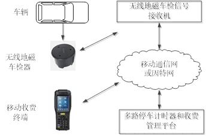
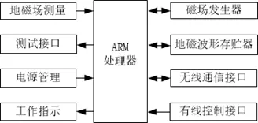

发表在中国计量2022.3
地磁型电子停车计时收费平台的现场检定仪的设计及应用
海 涛 郑州市先达电子技术有限公司
李 磊 漯河市质量技术监督检验测试中心
李 勇 焦作市质量技术监督检验测试中心
一、地磁型电子停车计时收费系统的组成和平台计时收费过程
地磁型电子停车计时收费管理系统的组成如图1所示。

图1 地磁型电子停车计时收费系统的组成
无线地磁车检测器工作原理如下：车辆（含铁质材料）通过地磁车辆检测器时，检测器中的地磁场测量传感器能检测到此处地磁场的变化规律，从而对车辆的存在性进行判断。一个车位内有一个地磁车检器，车检器的数量决定了停车计时管理系统的容量。
多路计时器和收费管理平台计时收费，是根据车辆的进场时刻和出场时刻，得到停车计时的时间间隔，再结合当地收费标准给出收费金额，形成计时收费单，通过现场移动收费终端进行收费。
二、现场检定仪设计原理
电子停车计时收费系统的计时检定关键是要实现检定仪和停车计时系统的同步计时，从而实现自动准确的计时误差检定，另外还要考虑检定工作的安全性、可实施性以及检定效率。
对于这种新型的集中管理集中计时收费平台的检定可考虑二种方案，一种是现场检定，另一种是远程在线检定，本文所采用的方案是现场检定方案。
现场检定所使用的现场检定仪（或装置）采用主从结构，有二个实物体，一个是上位机，一个是下位机，上位机控制下位机。上位机包含显示、按键、计时、控制和当前时刻等功能模块，下位机即地磁车辆模拟器。由于上位机采用的是已经成熟的技术，本文不再赘述，下面重点来说明下位机地磁车辆模拟器的模拟原理和组成。
根据车辆改变地磁场原理，本文设计了一种地磁车辆模拟器，当模拟器按照一定规律去改变地磁车检器处的地磁场时，地磁车检器同样能检测到“车辆”的存在与否，只是此时的“车辆”是处于工作中的地磁车辆模拟器。
将地磁车辆模拟器放置在地磁车辆检测器上方，检定仪上位机通过地磁车辆模拟器去模拟车辆进入车位、在车位、离开车位等过程，而车辆检测器给出相应检出结果并实时地送给计时收费平台来计时收费，这样就实现了检定仪和地磁停车计时收费平台的同步计时。
按照上述功能，本文给出地磁车辆模拟器的设计，模拟器的组成框图如图2所示。

图2 地磁车辆模拟器的组成框图
地磁车辆模拟器各组成部分的功能如下：地磁场测量模块用于测量停车位的地磁场强度；车辆地磁波形存贮器用于预存车辆地磁波形规律数据；磁场信号发生器用于产生地磁车辆信号；ARM处理器分别连接地磁测量模块、车辆地磁波形存贮器和磁场信号发生器。无线通信接口用于和检定仪上位机通信，没有连线的羁绊，现场工作较为安全和方便。
车辆模拟器工作过程如下：模拟器收到检定仪上位机发来的模拟指令后，会根据所测量的地磁场强度，调取车辆地磁波形规律数据，再控制磁场信号发生器产生地磁车辆信号。车辆地磁波形规律数据包括前进驶入、后退驶入、前进驶离、后退驶离等场景。
三、地磁型计时收费平台的现场检定步骤
应用电子停车计时装置现场检定仪，可以对地磁型电子停车计时收费平台的计时误差进行检定。现场检定仪包含上位机和下位机，上位机用XDJ-5F电子计时装置检定仪，下位机用新开发的地磁车辆模拟器。
下面根据图1来说明检定的方法和步骤：
（1）将地磁车辆模拟器放置于地磁车检器上方，取代真实车辆，在检定仪上位机上选择“无线地磁车辆模拟器”，模拟器的相关信息会上报至上位机并显示。
（2）在检定仪上位机上选择检定时间点，按开始计时键,启动计时，同时令地磁车辆模拟器模拟车辆进入车位。另一方面，停车计时收费系统检测到车辆占位，也同时开始计时，终端管理人员用移动收费终端对模拟车牌进行拍照识别上传。
（3）检定仪上位机计时结束，则车辆模拟器模拟车辆离开车位，而计时和收费管理平台停止计时，形成计时收费单，通过现场移动收费终端进行收费。
（4）如检定仪定时时长为T0（如1200s），而移动收费终端显示收费单中的停车时长为T，则平台的计时误差为T-T0。再比较检定仪和平台收费单上的车辆进车位和出车位的时刻数据，可对计时平台的时刻误差进行检定。
四、结束语
本文通过分析电子停车计时收费平台的原理，首次提出基于地磁车辆模拟的现场检定方法，并设计了主从结构的现场检定仪。本文采用数字技术设计了地磁车辆模拟器，模拟器所产生的地磁场波形精准稳定。利用该检定仪，已经对多地的地磁型停车计时收费平台的计时误差进行了检定，取得了满意的效果。由于检定仪的上位机和下位机可通过无线连接，这样可保证操作人员处于安全位置。本文提出的检定方法不需要实际车辆参与，是一种低碳的、安全的和便捷的检定方法。